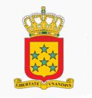

Antillas holandesas
 |
 |
Información General
Nombre oficial: Antillas Holandesas.
Área: 800 km².
División política:Territorio autónomo dentro del Reino de los Países Bajos.
Unidad monetaria: Florines de Antillas Holandesas.
Idiomas: Holandés (oficial); papiamento (la más hablada), inglés y español.
Fiesta nacional:
Gentilicio: de Antillas Holandesas.
Curiosidades
Antilla Holandesas está conformada por dos archipiélagos: Barlovento, en las costas de Venezuela, semiárido y llano, integrado por Bonaire y Curazao; y Sotavento, montañoso y lluvioso, entre Anguila, Islas Vírgenes y San Cristóbal, integrado por Saba, St. Eustatius y St. Maarten.
Perfil Ecónomico
PIB por habitante (Intl $): 7 060
Principales productos de exportación:
- Petróleo refinado
- Aloe
- Licor (Curazao)
- Los principales vínculos comerciales son con los E.U.
- Los servicios representan alrededor del 52 % del PIB.
Perfil Demográfico
Población: 224.000 hab
Densidad de población: 223 hab/km²
Fuente http://www.fao.org/faostat/foodsecurity/Countries/SP/NetherlandsAntilles_s.pdf
Perfil Cultural
Alfabetismo: 95%.
Religión:
- Católicos: 87,3%
- Protestantes: 8,0%
- No religiosos: 2,3%
- Otros: 1,2%
Sistema de Gobierno
Constitución vigente: 20 de diciembre de 1954.
Sistema ejecutivo: Consejo Legislativo (Staten) (veintidós miembros electos por sufragio universal cada cuatro años).
Sistema legislativo: Consejo Legislativo (Staten) (veintidós miembros electos por voto directo para mandatos de cinco años).
Sistema judicial: Corte Superior Conjunta, Cortes de Primera Instancia.
Aproximación histórica
Las Antillas Holandesas están integradas por dos archipiélagos diferentes: Sotavento, al este del Mar Caribe (St. Maarten, Saba y St. Eustatius) y Barlovento, al sur (Curazao y Bonaire).
El clima es ecuatorial en el archipiélago de Barlovento y tropical en el de Sotavento.
Descubiertas por los españoles en el siglo XV, estas islas fueron colonizadas por holandeses a partir del siglo XVII. Es en 1954 que logran la autonomía interna. Se han celebrado plebiscitos en 1993 y 1994 que han decidido la permanencia como Federación Antillana y parte autónoma de Holanda.
«-- ir al comienzo
«-- regresar